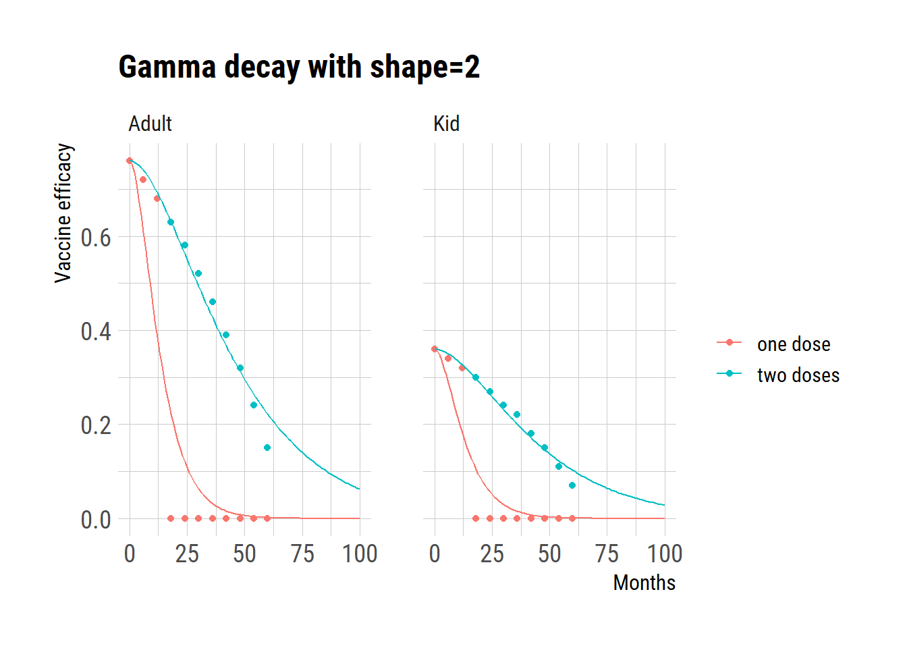
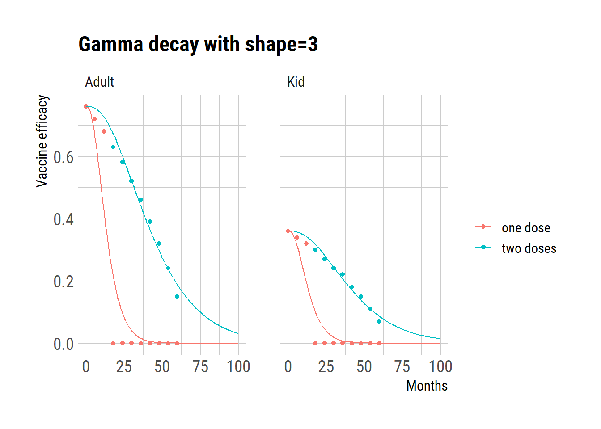
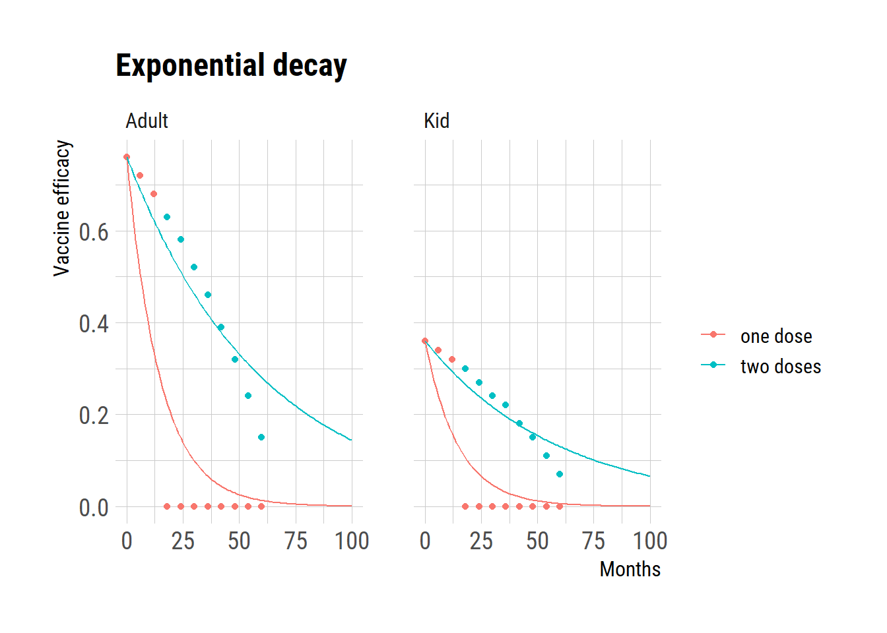
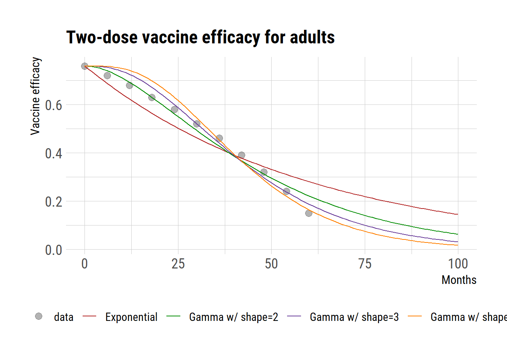

# data from Table S4, Lee et al. (2020) Lancet Glob Health
dat = data.frame(month = rep(seq(0,60,by=6),4),
age = c(rep("Adult", 11*2), rep("Kid", 11*2)),
type = rep("data", 11*4),
regimen = rep(c(rep("two doses", 11), rep("one dose", 11)),2),
val = c(c(76,72,68,63,58,52,46,39,32,24,15)/100,
c(76,72,68,0,0,0,0,0,0,0,0)/100,
c(36,34,32,30,27,24,22,18,15,11,7)/100,
c(36,34,32,0,0,0,0,0,0,0,0)/100))
library(dplyr)
ds = vector("list", 4)
ds[[1]] = filter(dat, age=="Adult", type=="data", regimen=="two doses")
ds[[2]] = filter(dat, age=="Kid", type=="data", regimen=="two doses")
ds[[3]] = filter(dat, age=="Adult", type=="data", regimen=="one dose")
ds[[4]] = filter(dat, age=="Kid", type=="data", regimen=="one dose")
fits_gamma_shape_2 <- list()
for (i in 1:4) {
fits_gamma_shape_2[[i]] <- nls(val ~
val[1]*pgamma(month, shape=2, rate=exp(lograte),
lower.tail=FALSE), start=list(lograte=log(0.3)), data=ds[[i]])
}
fits_gamma_shape_3 <- list()
for (i in 1:4) {
fits_gamma_shape_3[[i]] <- nls(val ~
val[1]*pgamma(month, shape=3, rate=exp(lograte),
lower.tail=FALSE), start=list(lograte=log(0.3)), data=ds[[i]])
}
fits_gamma_shape_4 <- list()
for (i in 1:4) {
fits_gamma_shape_4[[i]] <- nls(val ~
val[1]*pgamma(month, shape=4, rate=exp(lograte),
lower.tail=FALSE), start=list(lograte=log(0.3)), data=ds[[i]])
}
fits_gamma_shape_5 <- list()
for (i in 1:4) {
fits_gamma_shape_5[[i]] <- nls(val ~
val[1]*pgamma(month, shape=5, rate=exp(lograte),
lower.tail=FALSE), start=list(lograte=log(0.3)), data=ds[[i]])
}
fits_gamma_shape_8 <- list()
for (i in 1:4) {
fits_gamma_shape_8[[i]] <- nls(val ~
val[1]*pgamma(month, shape=8, rate=exp(lograte),
lower.tail=FALSE), start=list(lograte=log(0.3)), data=ds[[i]])
}
fits_exp <- list()
for (i in 1:4) {
fits_exp[[i]] <- nls(val ~
val[1]*pexp(month, rate=exp(lograte),
lower.tail=FALSE), start=list(lograte=log(0.3)), data=ds[[i]])
}Modeling the waning of the vaccine-derived immunity in the ODE model
vaccine-derived immunity
waning
cholera
ODE
exponential
Gamma
Modeling the waning of the vaccine-derived immunity in the ODE model
The use of ordinary differential equation (ODE) models to simulate disease spread and evaluate vaccine impact is growing. Waning of vaccine-derived immunity often follows an exponential distribution in these models. However, as with the case with incubation period incubation period that we examined in the previous post, exponential distribution may not accurately depict the waning of vaccine-derived immunity.
In this post, I explore how to model the waning of vaccine efficacy over time using an ODE framework, utilizing the data from a study by Lee et al. Specifically, I examine how various cumulative distributions can be applied to acurately represent the diminishing percentage of of the vaccine protection over time, through the use of R code examples.
Gammaa with shape=2
# prediction
months = 0:100
newd = data.frame(month = months)
pred = data.frame(month = rep(months, 4),
age = rep(c(rep("Adult", 101), rep("Kid", 101)), 2),
type = rep("model", 101*4),
regimen = c(rep("two doses", 101*2), rep("one dose", 101*2)),
val = c(predict(fits_gamma_shape_2[[1]], newdata = newd),
predict(fits_gamma_shape_2[[2]], newdata = newd),
predict(fits_gamma_shape_2[[3]], newdata = newd),
predict(fits_gamma_shape_2[[4]], newdata = newd)))
library(ggplot2)
extrafont::loadfonts("win", quiet=TRUE)
theme_set(hrbrthemes::theme_ipsum_rc(base_size=14, subtitle_size=16, axis_title_size=12))
ggplot(dat) +
geom_point(aes(month, val, color=regimen))+
geom_line(data=pred, aes(month, val, color=regimen)) +
facet_wrap(~age) +
ggtitle("Gamma decay with shape=2") +
labs(y="Vaccine efficacy", x="Months", color="")
Gammaa with shape=3
# prediction
months = 0:100
newd = data.frame(month = months)
pred = data.frame(month = rep(months, 4),
age = rep(c(rep("Adult", 101), rep("Kid", 101)), 2),
type = rep("model", 101*4),
regimen = c(rep("two doses", 101*2), rep("one dose", 101*2)),
val = c(predict(fits_gamma_shape_3[[1]], newdata = newd),
predict(fits_gamma_shape_3[[2]], newdata = newd),
predict(fits_gamma_shape_3[[3]], newdata = newd),
predict(fits_gamma_shape_3[[4]], newdata = newd)))
ggplot(dat) +
geom_point(aes(month, val, color=regimen))+
geom_line(data=pred, aes(month, val, color=regimen)) +
facet_wrap(~age) +
ggtitle("Gamma decay with shape=3") +
labs(y="Vaccine efficacy", x="Months", color="")
Exponential decay
# prediction
months = 0:100
newd = data.frame(month = months)
pred = data.frame(month = rep(months, 4),
age = rep(c(rep("Adult", 101), rep("Kid", 101)), 2),
type = rep("model", 101*4),
regimen = c(rep("two doses", 101*2), rep("one dose", 101*2)),
val = c(predict(fits_exp[[1]], newdata = newd),
predict(fits_exp[[2]], newdata = newd),
predict(fits_exp[[3]], newdata = newd),
predict(fits_exp[[4]], newdata = newd)))
ggplot(dat) +
geom_point(aes(month, val, color=regimen))+
geom_line(data=pred, aes(month, val, color=regimen)) +
facet_wrap(~age)+
ggtitle("Exponential decay") +
labs(y="Vaccine efficacy", x="Months", color="")
Given that the data for adults following a two-dose regimen seem to be the most reliable, we evaluated the model’s residual errors in comparison to this data. The analysis of residual errors indicates that a gamma distribution with a shape parameter of 3 presents the optimal fit.
summary(fits_exp[[1]])
Formula: val ~ val[1] * pexp(month, rate = exp(lograte), lower.tail = FALSE)
Parameters:
Estimate Std. Error t value Pr(>|t|)
lograte -4.09710 0.09047 -45.29 6.63e-13 ***
---
Signif. codes: 0 '***' 0.001 '**' 0.01 '*' 0.05 '.' 0.1 ' ' 1
Residual standard error: 0.0643 on 10 degrees of freedom
Number of iterations to convergence: 6
Achieved convergence tolerance: 6.629e-06summary(fits_gamma_shape_2[[1]])
Formula: val ~ val[1] * pgamma(month, shape = 2, rate = exp(lograte),
lower.tail = FALSE)
Parameters:
Estimate Std. Error t value Pr(>|t|)
lograte -3.18619 0.02946 -108.2 <2e-16 ***
---
Signif. codes: 0 '***' 0.001 '**' 0.01 '*' 0.05 '.' 0.1 ' ' 1
Residual standard error: 0.03005 on 10 degrees of freedom
Number of iterations to convergence: 5
Achieved convergence tolerance: 6.246e-06summary(fits_gamma_shape_3[[1]])
Formula: val ~ val[1] * pgamma(month, shape = 3, rate = exp(lograte),
lower.tail = FALSE)
Parameters:
Estimate Std. Error t value Pr(>|t|)
lograte -2.72304 0.02375 -114.7 <2e-16 ***
---
Signif. codes: 0 '***' 0.001 '**' 0.01 '*' 0.05 '.' 0.1 ' ' 1
Residual standard error: 0.02893 on 10 degrees of freedom
Number of iterations to convergence: 4
Achieved convergence tolerance: 1.595e-06summary(fits_gamma_shape_4[[1]])
Formula: val ~ val[1] * pgamma(month, shape = 4, rate = exp(lograte),
lower.tail = FALSE)
Parameters:
Estimate Std. Error t value Pr(>|t|)
lograte -2.41214 0.02884 -83.64 1.46e-15 ***
---
Signif. codes: 0 '***' 0.001 '**' 0.01 '*' 0.05 '.' 0.1 ' ' 1
Residual standard error: 0.0394 on 10 degrees of freedom
Number of iterations to convergence: 6
Achieved convergence tolerance: 7.874e-07summary(fits_gamma_shape_5[[1]])
Formula: val ~ val[1] * pgamma(month, shape = 5, rate = exp(lograte),
lower.tail = FALSE)
Parameters:
Estimate Std. Error t value Pr(>|t|)
lograte -2.17801 0.03374 -64.56 1.94e-14 ***
---
Signif. codes: 0 '***' 0.001 '**' 0.01 '*' 0.05 '.' 0.1 ' ' 1
Residual standard error: 0.05009 on 10 degrees of freedom
Number of iterations to convergence: 6
Achieved convergence tolerance: 9.615e-06# prediction
months = 0:100
newd = data.frame(month = months)
pred = data.frame(month = rep(months, 4),
age = rep("Adult", 101*4),
type = c(rep("Exponential", 101),
rep("Gamma w/ shape=2", 101),
rep("Gamma w/ shape=3", 101),
rep("Gamma w/ shape=4", 101)),
regimen = rep("two doses", 101*4),
val = c(predict(fits_exp[[1]], newdata = newd),
predict(fits_gamma_shape_2[[1]], newdata = newd),
predict(fits_gamma_shape_3[[1]], newdata = newd),
predict(fits_gamma_shape_4[[1]], newdata = newd)))
ggplot() +
geom_point(data=filter(dat, age=="Adult", regimen=="two doses"),
aes(month, val, color="data"), shape=19, size=3, alpha=0.3)+
geom_line(data=pred, aes(month, val, color=type)) +
ggtitle("Two-dose vaccine efficacy for adults") +
labs(y="Vaccine efficacy", x="Months", color="")+
scale_colour_manual(
values=c("data" = "black", "Exponential" = "firebrick",
"Gamma w/ shape=2" = "green4","Gamma w/ shape=3" = "#6A3D9A",
"Gamma w/ shape=4" = "#FF7F00"),
guide=guide_legend(override.aes = list(
linetype=c("data"="blank","Exponential" = "solid",
"Gamma w/ shape=2" = "solid",
"Gamma w/ shape=3" = "solid",
"Gamma w/ shape=4" = "solid"),
shape=c('data'=19,"Exponential" = NA,
"Gamma w/ shape=2" = NA,
"Gamma w/ shape=3" = NA,
"Gamma w/ shape=4" = NA))))+
theme(legend.position = "bottom")